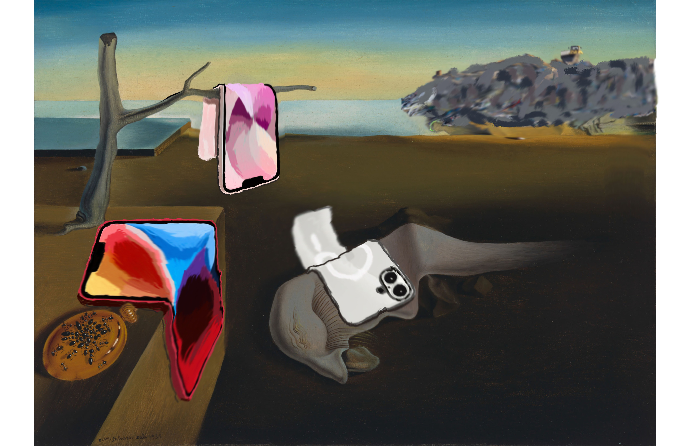
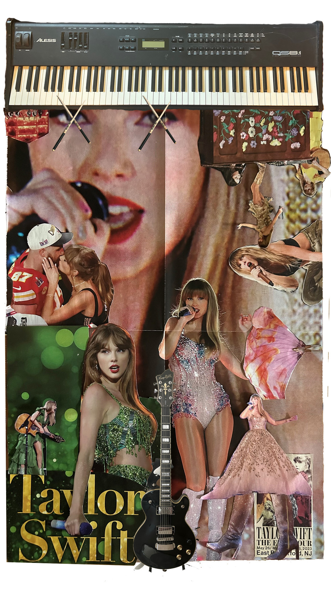
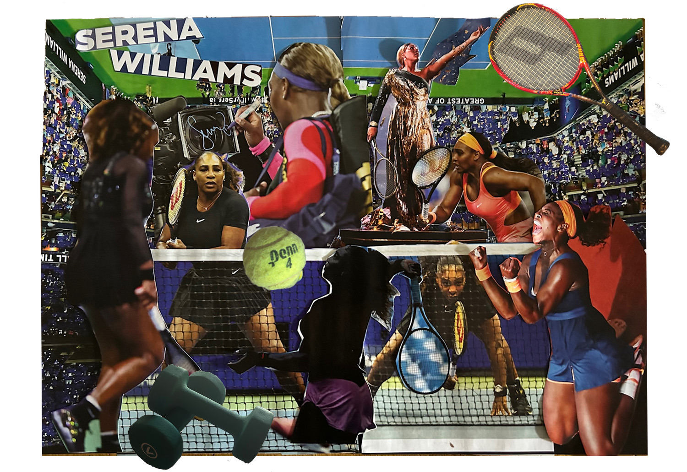
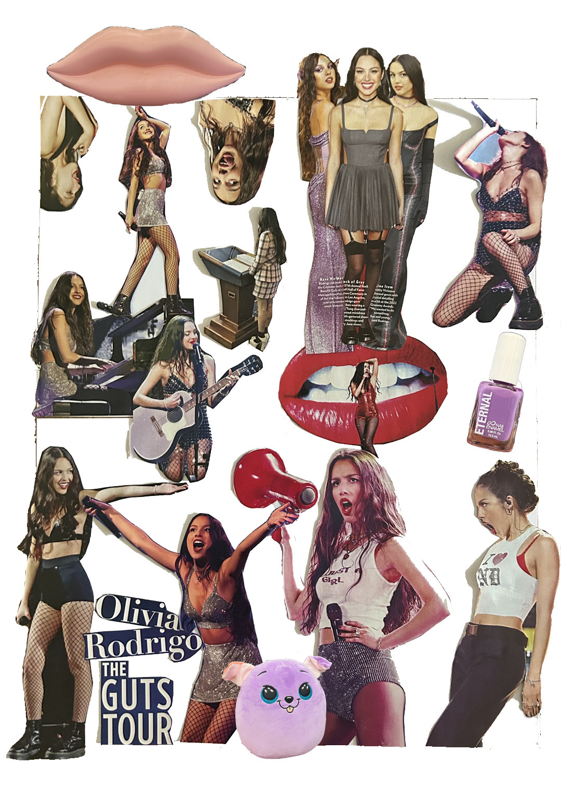
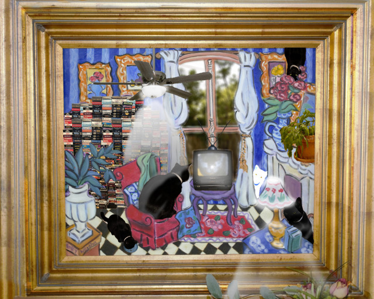
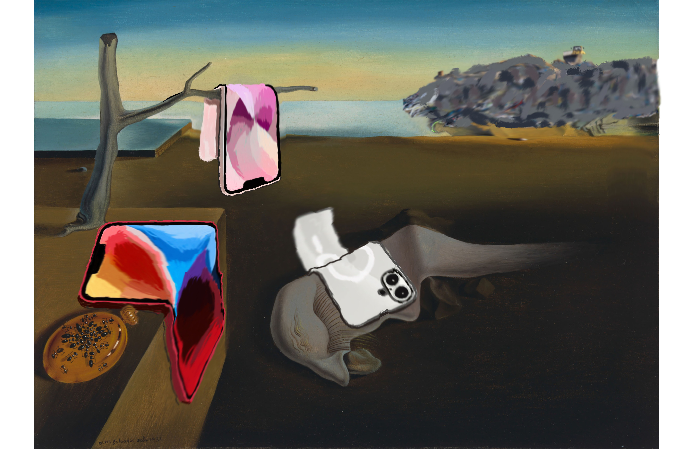
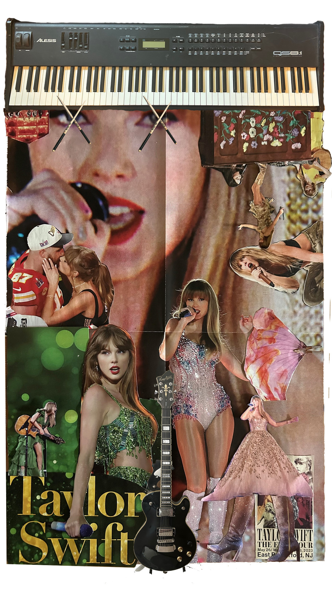
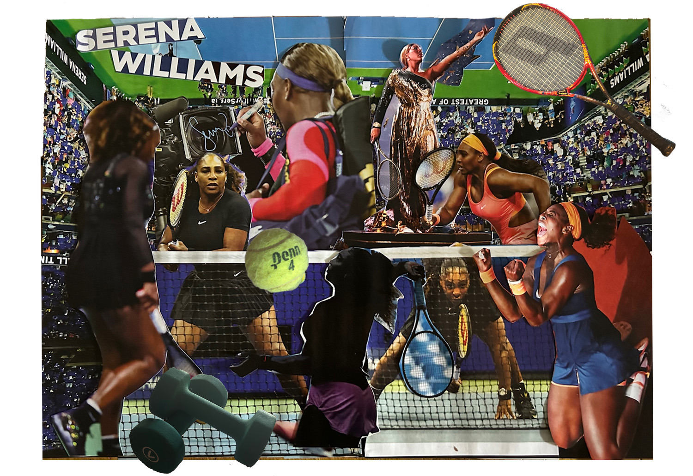
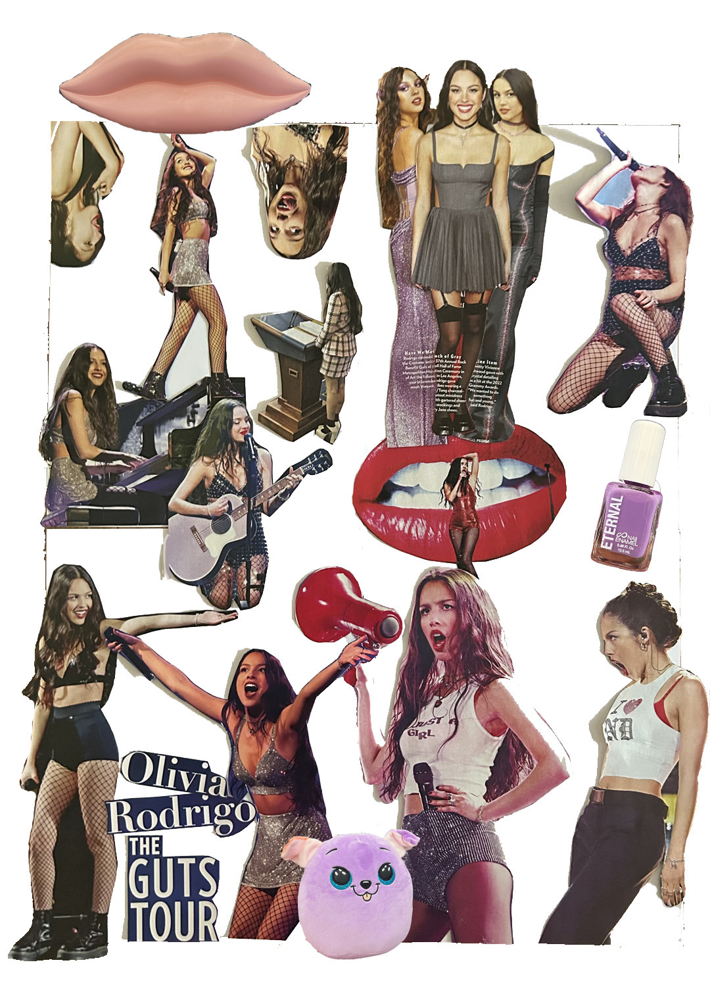
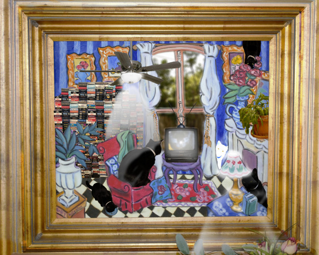

Art, Audio & Visual
This page highlights a range of my creative work beyond UX; including audio-reactive visualizers built in TouchDesigner, a short silent film project, and a selection of digital paintings. These pieces explore narrative, rhythm, color, and visual style across different mediums.
Gallery
 









Audio Reactive Visualizers Made In TouchDesigner
A series of audio-reactive visualizers created in TouchDesigner, built around music I produced with a collaborator. Each piece translates musical structure into real-time motion and color. All vocals are sourced from royalty-free libraries, allowing the focus to stay on composition, sound design, and procedural animation.
Silent Short Film
A short silent film exploring frustration, timing, and visual storytelling. The project follows a simple but relatable sequence: losing my keys after a long day, only to accidentally lock them in my car. Told without dialogue, the piece focuses on pacing, expression, and physical comedy.
KeyBoard Board Infomercial
A minute long fake-infomercial advertising my space saving ivention, The Keyboard BOARD